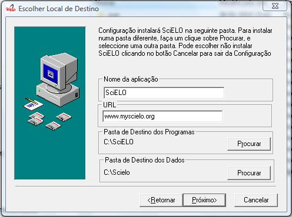
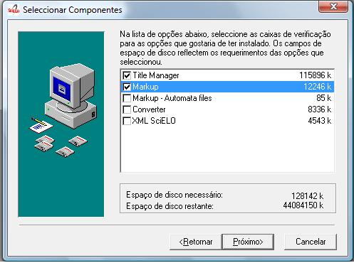
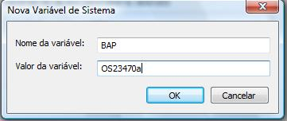

- Configure

- “application’s name”
- Examples: SciELO Brazil, SciELO Chile, SciELO v4.0, etc., or just SciELO.
- URL
- production website address Example: www.scielo.br
- destination data folder
- folder which have serial folder
- Select the programs you want to install in your computer, considering if it is the local server or the markup computer.
- Programs for local server
- Code Manager: program to manager tables of codes/labels. For example, countries table: BR (code) and Brazil (label)
- Title Manager: program to manager journal data that are part of the collection, their issues and sections of table of contents
- Converter: program responsible for loading the CDS / ISIS database using complete text documents previously marked
- Markup: program to identify each bibliographic element on articles and texts
- SGML Parser: program to identify possible markup errors on the marked files. It is always installed.
- XML SciELO: program (optional) to create XML format accepted by PubMed and ISI
- Programs for Markup Computer
- Markup: program to identify each bibliographic element on articles and texts
- SGML Parser: program to identify possible markup errors on the marked files. It is always installed.
Note: Markup - automata files are examples of automatas. Its installation is optional.


- By Windows menu go to: Control Panel -> Performance and Maintenance -> System -> Advanced Settings -> Environment variables.
- Check if the variable already exists.
- If it does not, click New and enter the data.